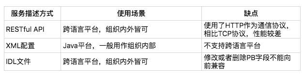

- 00 开篇词 微服务，从放弃到入门.md.html
- 01 到底什么是微服务？.md.html
- 02 从单体应用走向服务化.md.html
- 03 初探微服务架构.md.html
- 04 如何发布和引用服务？.md.html
- 05 如何注册和发现服务？.md.html
- 06 如何实现RPC远程服务调用？.md.html
- 07 如何监控微服务调用？.md.html
- 08 如何追踪微服务调用？.md.html
- 09 微服务治理的手段有哪些？.md.html
- 10 Dubbo框架里的微服务组件.md.html
- 11 服务发布和引用的实践.md.html
- 12 如何将注册中心落地？.md.html
- 13 开源服务注册中心如何选型？.md.html
- 14 开源RPC框架如何选型？.md.html
- 15 如何搭建一个可靠的监控系统？.md.html
- 16 如何搭建一套适合你的服务追踪系统？.md.html
- 17 如何识别服务节点是否存活？.md.html
- 18 如何使用负载均衡算法？.md.html
- 19 如何使用服务路由？.md.html
- 20 服务端出现故障时该如何应对？.md.html
- 21 服务调用失败时有哪些处理手段？.md.html
- 22 如何管理服务配置？.md.html
- 23 如何搭建微服务治理平台？.md.html
- 24 微服务架构该如何落地？.md.html
- 25 微服务为什么要容器化？.md.html
- 26 微服务容器化运维：镜像仓库和资源调度.md.html
- 27 微服务容器化运维：容器调度和服务编排.md.html
- 28 微服务容器化运维：微博容器运维平台DCP.md.html
- 29 微服务如何实现DevOps？.md.html
- 30 如何做好微服务容量规划？.md.html
- 31 微服务多机房部署实践.md.html
- 32 微服务混合云部署实践.md.html
- 33 下一代微服务架构Service Mesh.md.html
- 34 Istio：Service Mesh的代表产品.md.html
- 35 微博Service Mesh实践之路（上）.md.html
- 36 微博Service Mesh实践之路（下）.md.html
- 微博技术解密（上） 微博信息流是如何实现的？.md.html
- 微博技术解密（下）微博存储的那些事儿.md.html
- 结束语 微服务，从入门到精通.md.html
- 阿忠伯的特别放送 答疑解惑01.md.html
- 阿忠伯的特别放送 答疑解惑02.md.html
- 捐赠
04 如何发布和引用服务？
从这期开始，我将陆续给你讲解微服务各个基本组件的原理和实现方式。
今天我要与你分享的第一个组件是服务发布和引用。我在前面说过，想要构建微服务，首先要解决的问题是，服务提供者如何发布一个服务，服务消费者如何引用这个服务。具体来说，就是这个服务的接口名是什么？调用这个服务需要传递哪些参数？接口的返回值是什么类型？以及一些其他接口描述信息。
我前面说过，最常见的服务发布和引用的方式有三种：
RESTful API
XML配置
IDL文件
下面我就结合具体的实例，逐个讲解每一种方式的具体使用方法以及各自的应用场景，以便你在选型时作参考。
RESTful API
首先来说说RESTful API的方式，主要被用作HTTP或者HTTPS协议的接口定义，即使在非微服务架构体系下，也被广泛采用。
下面是开源服务化框架Motan发布RESTful API的例子，它发布了三个RESTful格式的API，接口声明如下：
@Path("/rest")
public interface RestfulService {
@GET
@Produces(MediaType.APPLICATION_JSON)
List<User> getUsers(@QueryParam("uid") int uid);
@GET
@Path("/primitive")
@Produces(MediaType.TEXT_PLAIN)
String testPrimitiveType();
@POST
@Consumes(MediaType.APPLICATION_FORM_URLENCODED)
@Produces(MediaType.APPLICATION_JSON)
Response add(@FormParam("id") int id, @FormParam("name") String name);
具体的服务实现如下：
public class RestfulServerDemo implements RestfulService {
@Override
public List<User> getUsers(@CookieParam("uid") int uid) {
return Arrays.asList(new User(uid, "name" + uid));
}
@Override
public String testPrimitiveType() {
return "helloworld!";
}
@Override
public Response add(@FormParam("id") int id, @FormParam("name") String name) {
return Response.ok().cookie(new NewCookie("ck", String.valueOf(id))).entity(new User(id, name)).build();
}
服务提供者这一端通过部署代码到Tomcat中，并配置Tomcat中如下的web.xml，就可以通过servlet的方式对外提供RESTful API。
<listener>
<listener-class>com.weibo.api.motan.protocol.restful.support.servlet.RestfulServletContainerListener</listener-class>
</listener>
<servlet>
<servlet-name>dispatcher</servlet-name>
<servlet-class>org.jboss.resteasy.plugins.server.servlet.HttpServletDispatcher</servlet-class>
<load-on-startup>1</load-on-startup>
<init-param>
<param-name>resteasy.servlet.mapping.prefix</param-name>
<param-value>/servlet</param-value> <!-- 此处实际为servlet-mapping的url-pattern，具体配置见resteasy文档-->
</init-param>
</servlet>
<servlet-mapping>
<servlet-name>dispatcher</servlet-name>
<url-pattern>/servlet/*</url-pattern>
</servlet-mapping>
这样服务消费者就可以通过HTTP协议调用服务了，因为HTTP协议本身是一个公开的协议，对于服务消费者来说几乎没有学习成本，所以比较适合用作跨业务平台之间的服务协议。比如你有一个服务，不仅需要在业务部门内部提供服务，还需要向其他业务部门提供服务，甚至开放给外网提供服务，这时候采用HTTP协议就比较合适，也省去了沟通服务协议的成本。
XML配置
接下来再来给你讲下XML配置方式，这种方式的服务发布和引用主要分三个步骤：
服务提供者定义接口，并实现接口。
服务提供者进程启动时，通过加载server.xml配置文件将接口暴露出去。
服务消费者进程启动时，通过加载client.xml配置文件来引入要调用的接口。
我继续以服务化框架Motan为例，它还支持以XML配置的方式来发布和引用服务。
首先，服务提供者定义接口。
public interface FooService {
public String hello(String name);
}
然后服务提供者实现接口。
public class FooServiceImpl implements FooService {
public String hello(String name) {
System.out.println(name + " invoked rpc service");
return "hello " + name;
}
}
最后服务提供者进程启动时，加载server.xml配置文件，开启8002端口监听。
server.xml配置如下：
<?xml version="1.0" encoding="UTF-8"?>
<beans xmlns="http://www.springframework.org/schema/beans"
xmlns:xsi="http://www.w3.org/2001/XMLSchema-instance"
xmlns:motan="http://api.weibo.com/schema/motan"
xsi:schemaLocation="http://www.springframework.org/schema/beans http://www.springframework.org/schema/beans/spring-beans-2.5.xsd
http://api.weibo.com/schema/motan http://api.weibo.com/schema/motan.xsd">
<!-- service implemention bean -->
<bean id="serviceImpl" class="quickstart.FooServiceImpl" />
<!-- exporting service by Motan -->
<motan:service interface="quickstart.FooService" ref="serviceImpl" export="8002" />
</beans>
服务提供者加载server.xml的代码如下：
import org.springframework.context.ApplicationContext;
import org.springframework.context.support.ClassPathXmlApplicationContext;
public class Server {
public static void main(String[] args) throws InterruptedException {
ApplicationContext applicationContext = new ClassPathXmlApplicationContext("classpath:motan_server.xml");
System.out.println("server start...");
}
}
服务消费者要想调用服务，就必须在进程启动时，加载配置client.xml，引用接口定义，然后发起调用。
client.xml配置如下：
<?xml version="1.0" encoding="UTF-8"?>
<beans xmlns="http://www.springframework.org/schema/beans"
xmlns:xsi="http://www.w3.org/2001/XMLSchema-instance"
xmlns:motan="http://api.weibo.com/schema/motan"
xsi:schemaLocation="http://www.springframework.org/schema/beans http://www.springframework.org/schema/beans/spring-beans-2.5.xsd
http://api.weibo.com/schema/motan http://api.weibo.com/schema/motan.xsd">
<!-- reference to the remote service -->
<motan:referer id="remoteService" interface="quickstart.FooService" directUrl="localhost:8002"/>
</beans>
服务消费者启动时，加载client.xml的代码如下。
import org.springframework.context.ApplicationContext;
import org.springframework.context.support.ClassPathXmlApplicationContext;
public class Client {
public static void main(String[] args) throws InterruptedException {
ApplicationContext ctx = new ClassPathXmlApplicationContext("classpath:motan_client.xml");
FooService service = (FooService) ctx.getBean("remoteService");
System.out.println(service.hello("motan"));
}
}
就这样，通过在服务提供者和服务消费者之间维持一份对等的XML配置文件，来保证服务消费者按照服务提供者的约定来进行服务调用。在这种方式下，如果服务提供者变更了接口定义，不仅需要更新服务提供者加载的接口描述文件server.xml，还需要同时更新服务消费者加载的接口描述文件client.xml。
一般是私有RPC框架会选择XML配置这种方式来描述接口，因为私有RPC协议的性能要比HTTP协议高，所以在对性能要求比较高的场景下，采用XML配置的方式比较合适。但这种方式对业务代码侵入性比较高，XML配置有变更的时候，服务消费者和服务提供者都要更新，所以适合公司内部联系比较紧密的业务之间采用。如果要应用到跨部门之间的业务调用，一旦有XML配置变更，需要花费大量精力去协调不同部门做升级工作。在我经历的实际项目里，就遇到过一次底层服务的接口升级，需要所有相关的调用方都升级，为此花费了大量时间去协调沟通不同部门之间的升级工作，最后经历了大半年才最终完成。所以对于XML配置方式的服务描述，一旦应用到多个部门之间的接口格式约定，如果有变更，最好是新增接口，不到万不得已不要对原有的接口格式做变更。
IDL文件
IDL就是接口描述语言（interface description language）的缩写，通过一种中立的方式来描述接口，使得在不同的平台上运行的对象和不同语言编写的程序可以相互通信交流。比如你用Java语言实现提供的一个服务，也能被PHP语言调用。
也就是说IDL主要是用作跨语言平台的服务之间的调用，有两种最常用的IDL：一个是Facebook开源的Thrift协议，另一个是Google开源的gRPC协议。无论是Thrift协议还是gRPC协议，它们的工作原理都是类似的。
接下来，我以gRPC协议为例，给你讲讲如何使用IDL文件方式来描述接口。
gRPC协议使用Protobuf简称proto文件来定义接口名、调用参数以及返回值类型。
比如文件helloword.proto定义了一个接口SayHello方法，它的请求参数是HelloRequest，它的返回值是HelloReply。
// The greeter service definition.
service Greeter {
// Sends a greeting
rpc SayHello (HelloRequest) returns (HelloReply) {}
rpc SayHelloAgain (HelloRequest) returns (HelloReply) {}
}
// The request message containing the user's name.
message HelloRequest {
string name = 1;
}
// The response message containing the greetings
message HelloReply {
string message = 1;
}
假如服务提供者使用的是Java语言，那么利用protoc插件即可自动生成Server端的Java代码。
private class GreeterImpl extends GreeterGrpc.GreeterImplBase {
@Override
public void sayHello(HelloRequest req, StreamObserver<HelloReply> responseObserver) {
HelloReply reply = HelloReply.newBuilder().setMessage("Hello " + req.getName()).build();
responseObserver.onNext(reply);
responseObserver.onCompleted();
}
@Override
public void sayHelloAgain(HelloRequest req, StreamObserver<HelloReply> responseObserver) {
HelloReply reply = HelloReply.newBuilder().setMessage("Hello again " + req.getName()).build();
responseObserver.onNext(reply);
responseObserver.onCompleted();
}
}
假如服务消费者使用的也是Java语言，那么利用protoc插件即可自动生成Client端的Java代码。
public void greet(String name) {
logger.info("Will try to greet " + name + " ...");
HelloRequest request = HelloRequest.newBuilder().setName(name).build();
HelloReply response;
try {
response = blockingStub.sayHello(request);
} catch (StatusRuntimeException e) {
logger.log(Level.WARNING, "RPC failed: {0}", e.getStatus());
return;
}
logger.info("Greeting: " + response.getMessage());
try {
response = blockingStub.sayHelloAgain(request);
} catch (StatusRuntimeException e) {
logger.log(Level.WARNING, "RPC failed: {0}", e.getStatus());
return;
}
logger.info("Greeting: " + response.getMessage());
}
假如服务消费者使用的是PHP语言，那么利用protoc插件即可自动生成Client端的PHP代码。
$request = new Helloworld\HelloRequest();
$request->setName($name);
list($reply, $status) = $client->SayHello($request)->wait();
$message = $reply->getMessage();
list($reply, $status) = $client->SayHelloAgain($request)->wait();
$message = $reply->getMessage();
由此可见，gRPC协议的服务描述是通过proto文件来定义接口的，然后再使用protoc来生成不同语言平台的客户端和服务端代码，从而具备跨语言服务调用能力。
有一点特别需要注意的是，在描述接口定义时，IDL文件需要对接口返回值进行详细定义。如果接口返回值的字段比较多，并且经常变化时，采用IDL文件方式的接口定义就不太合适了。一方面可能会造成IDL文件过大难以维护，另一方面只要IDL文件中定义的接口返回值有变更，都需要同步所有的服务消费者都更新，管理成本就太高了。
我在项目实践过程中，曾经考虑过采用Protobuf文件来描述微博内容接口，但微博内容返回的字段有几百个，并且有些字段不固定，返回什么字段是业务方自定义的，这种情况采用Protobuf文件来描述的话会十分麻烦，所以最终不得不放弃这种方式。
总结
今天我给你介绍了服务描述最常见的三种方式：RESTful API、XML配置以及IDL文件。
具体采用哪种服务描述方式是根据实际情况决定的，通常情况下，如果只是企业内部之间的服务调用，并且都是Java语言的话，选择XML配置方式是最简单的。如果企业内部存在多个服务，并且服务采用的是不同语言平台，建议使用IDL文件方式进行描述服务。如果还存在对外开放服务调用的情形的话，使用RESTful API方式则更加通用。

思考题
针对你的业务场景思考一下，假如要进行服务化，你觉得使用哪种服务描述最合适？为什么？
欢迎你在留言区写下自己的思考，与我一起讨论。
© 2019 - 2023 Liangliang Lee. Powered by gin and hexo-theme-book.